3-13-Raid磁盘冗余阵列
RAID，全称为Redundant Arrays of Independent Drives，即磁盘冗余阵列。
这是由多块独立磁盘（多为硬盘）组合的一个超大容量磁盘组。
计算机一直是在飞速的发展，更新，整体计算机硬件也得到极大的提升，由于磁盘的特性，需要持续、频繁、大量的读写操作，相比较于其他硬件设备，很容易损坏，导致数据丢失。
大白话的解释
磁盘冗余阵列，就是将很多块硬盘组合成一个整体，不同的RAID级别，可以实现不同的功能
如加速数据读写、如实现数据备份。
商业存储服务器
存储服务器也就是比普通服务器支持更多的硬盘扩展，支持的容量存储更多。
也被称作NAS （network attached storage ，网络连接存储）
现在也有很多服务器，支持足够大的存储容量，当做存储服务器来用了。
如https://item.jd.com/10040339075681.html
dell 740xd
Raid历史
RAID(Redundant Array of Independent Disk ==独立冗余磁盘阵列==)技术是加州大学伯克利分校1987年提出，最初是为了组合小的廉价磁盘来代替大的昂贵磁盘，同时希望磁盘失效时不会使对数据的访问受损失而开发出一定水平的数据保护技术。
RAID就是一种由==多块廉价磁盘构成==的冗余阵列，在操作系统下是作为一个独立的==大型存储设备==出现。
RAID可以充分发挥出多块硬盘的优势，可以==提升硬盘速度==，==增大容量==，提供==容错功能==，能够==确保数据安全性==，==易于管理==的优点，在任何一块硬盘出现问题的情况下都可以继续工作，不会 受到损坏硬盘的影响。
Raid特性
Raid磁盘阵列组能够提升数据冗余性，当然也增加了硬盘的价格成本（需要更多的硬盘），只不过数据本身的价值是超过硬盘购买的价格的，Raid除了能够保障数据丢失造成的严重损失，还能提升硬盘读写效率，被应用在广泛的企业中。
图解Raid
- 单机
- 热交换
- 集群
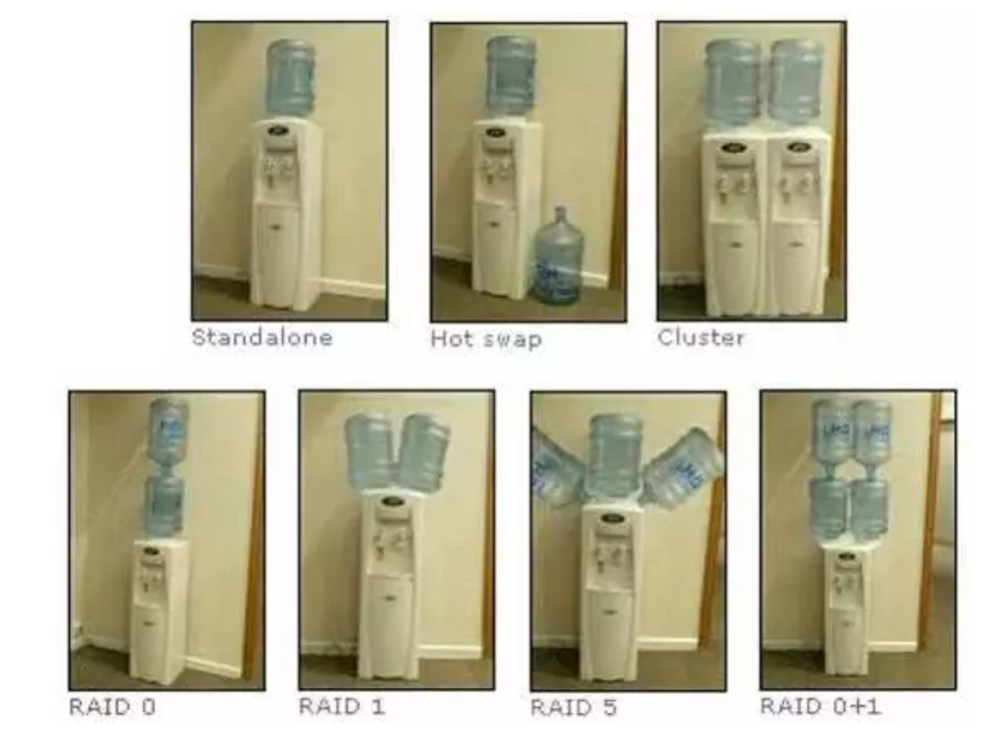
于超老师先不谈磁盘，饮水机各位应该都了解
- standalone
独立模式，最常见的模式，一台饮水机，一桶水
（一块磁盘读写数据）
- Hot swap
热备份模式，一桶水可能会喝完，水桶可能会坏，旁边放一个预备水桶，随时替代
（防止单独一块硬盘突然损坏，故障，另一块硬盘随时等待接替）
- Cluster
集群模式，一堆饮水机一起提供服务，提高用户接水效率
（一堆硬盘共同提供工作，提高读写效率）
不同的Raid级别
由于技术角度因素、成本控制因素等，不同的企业在数据的可靠性以及性能上做了权衡，制定出不同的Raid方案。
Raid 0
RAID0磁盘总容量
将两个或两个以上相同型号、容量的硬盘组合，磁盘阵列的总容量便是多个硬盘的总和。
RAID0特点
- 至少需要两块磁盘
- 数据==条带化==分布到磁盘，==高的读写性能==，100%==高存储空间利用率==
- 数据==没有冗余策略==，一块磁盘故障，数据将无法恢复
- 应用场景：
- 对性能要求高但对数据安全性和可靠性要求不高的场景，比如音频、视频等的存储。
备注
条带化技术就是一种自动的将 I/O 的负载均衡到多个物理磁盘上的技术
磁盘条带化是指利用条带化技术就是将一块连续的数据分成很多小部分并把它们分别存储到不同磁盘上去。
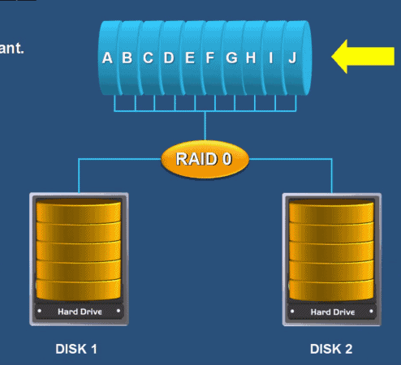
数据依次写入物理硬盘，理想状态下，硬盘读写性能会翻倍，性能大于单个硬盘。
但是raid 0 任意一块硬盘故障都会导致整个系统数据被破坏，数据分别写入两个硬盘设备，没有数据备份的功能。
raid0场景
Raid 0 适用于对于数据安全性不太关注，追求性能的场景。
好比你有一些小秘密，不想放云盘，数据量又比较大，可以快速写入raid 0。
本来读写都是一块硬盘，数据都得排队，效率肯定低
raid 0 把数据打散，好比多了条队同时排，效率一下子就提升了，因此raid 0 可以大幅度的提升，硬盘的读写能力。
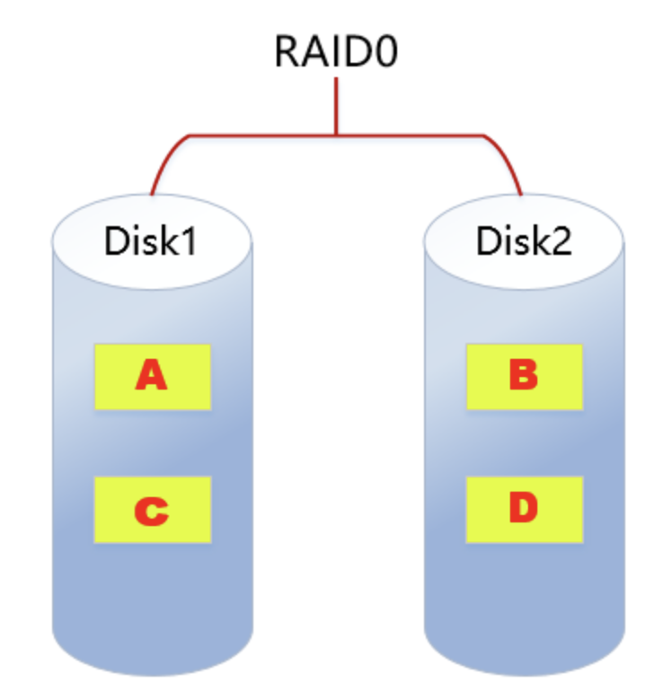
raid 1
由于raid 0的特性，数据依次写入到各个物理硬盘中，数据是分开放的，因此损坏任意一个硬盘，都会对完整的数据破坏，对于企业数据来说，肯定是不允许。
Raid 1技术，是将两块以上硬盘绑定，数据写入时，同时写入多个硬盘，因此即使有硬盘故障，也有数据备份。

但是这种方式，无疑极大降低磁盘利用率，假设两块硬盘一共4T，真实数据只有2TB，利用率50%，如果是三块硬盘组成raid 1，利用率只有33%，也是不可取的。
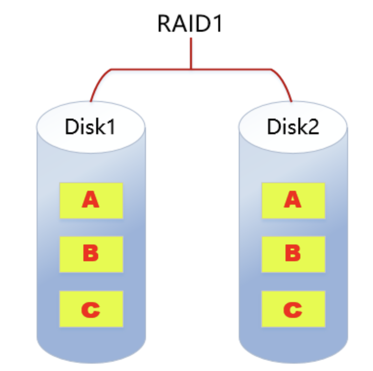
RAID1特点
- 至少需要2块磁盘
- 数据==镜像备份==写到磁盘上(工作盘和镜像盘)，==可靠性高==，磁盘利用率为50%
- 读性能可以，但写性能不佳，写入数据要同步，因此速度很慢。
- 一块磁盘故障，不会影响数据的读写，因为是镜像盘，冗余性好，只要有一块是好的，数据还是玩转的。
- RAID 1应用场景：
- 对数据安全可靠要求较高的场景，比如邮件系统、交易系统等。
那有没有一种方案，能够控制成本、保证数据安全性、以及读写速度呢？
raid 5
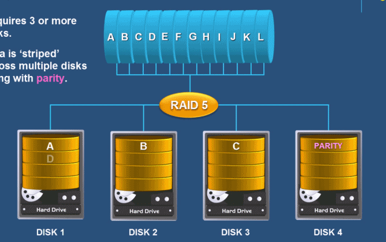
RAID5特点：
- 至少需要3块磁盘
- 数据==条带化==存储在磁盘，==读写性能好==，磁盘利用率为(n-1)/n
- 一块磁盘故障，可根据其他数据块和对应的校验数据重构损坏数据（消耗性能）
- 校验算法是计算机二进制的的异或运算（了解即可）
- 只能允许坏掉一块盘。
- 是目前综合==性能最佳==的==数据保护==解决方案
- 兼顾了存储性能、数据安全和存储成本等各方面因素（==性价比高==）
- 适用于大部分的应用场景
- 可以看到raid 5 是两两数据就会计算出一个校验值，存储在一个硬盘上
- 如果遇见磁盘损坏，且只能挂掉一块，还是可以用其他磁盘恢复数据的。
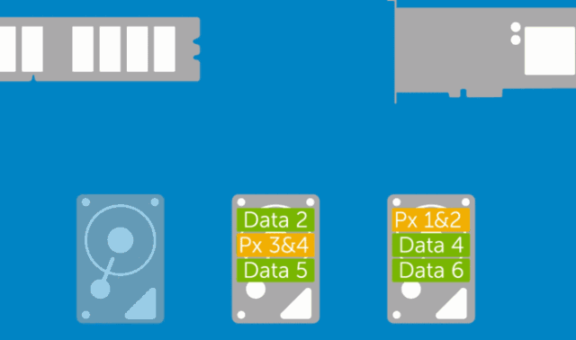
raid 6
比起raid5提供的数据校验，又多了一层校验，双层校验。
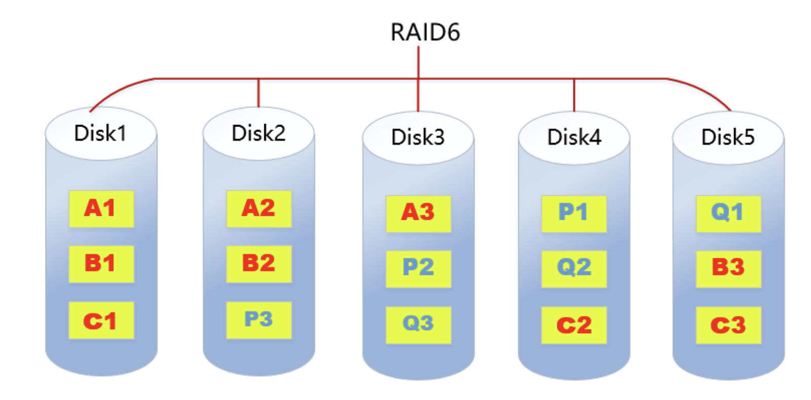
RAID6特点：
- 至少需要4块磁盘
- 数据==条带化==存储在磁盘，读取性能好，容错能力强
- 采用==双重校验==方式保证数据的安全性
- 如果==2块磁盘同时故障==，可以通过两个校验数据来重建两个磁盘的数据
- 成本要比其他等级高，并且更复杂
- 一般用于对数据安全性要求==非常高==的场合
Raid 10
对于企业来说，最核心的就是数据，成本不是问题。
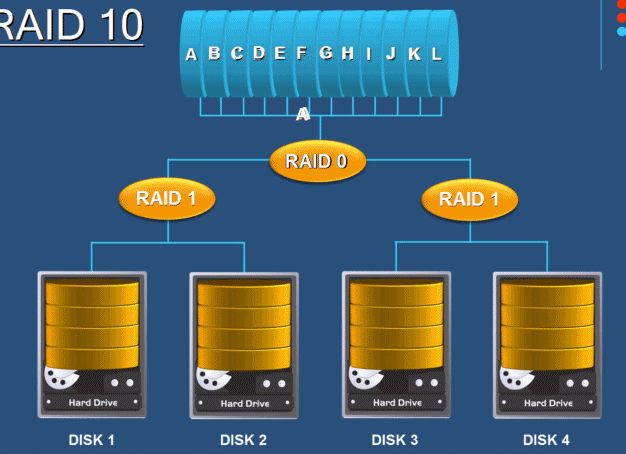
RAID10特点：
RAID10是raid1+raid0的组合- 至少需要4块磁盘
- 两块硬盘为一组先做raid1，再将做好raid1的两组做raid0
- 兼顾==数据的冗余==（raid1镜像）和==读写性能==（raid0数据条带化）
磁盘利用率为50%，成本较高
只要坏的不是同一个组中，所有的硬盘，就算坏掉一半硬盘都不会丢数据。
因此raid10是最实用的方案。
总结raid级别
| 类型 | 读写性能 | 可靠性 | 磁盘利用率 | 成本 |
|---|---|---|---|---|
| RAID0 | 最好 | 最低 | 100% | 较低 |
| RAID1 | 读正常；写两份数据 | 高 | 50% | 高 |
| RAID5 | 读:近似RAID0 写:多了校验 | RAID0<RAID5<RAID1 | (n-1)/n | RAID0<RAID5<RAID1 |
| RAID6 | 读：近似RAID0 写:多了双重校验 | RAID6>RAID5 | RAID6<RAID5 | RAID6>RAID1 |
| RAID10 | 读：RAID10=RAID0 写：RAID10=RAID1 | 高 | 50% | 最高 |
生产环境下的RAID选择
- 可能用
- 可能不用
物理服务器、使用物理raid卡来实现
云服务器、完全不用关心raid搭建，云厂商会给你提供靠谱的高性能、高安全性的磁盘底层技术。
于超老师问过阿里云的技术客服，他们已经不用raid了，而是用2种方式
1.本地高性能硬盘，nvme技术
如https://search.jd.com/Search?keyword=nvme&enc=utf-8
2.分布式存储技术，具体看阿里云文档
https://help.aliyun.com/document_detail/25383.html?source=5176.11533457&userCode=r3yteowb&type=copy
硬raid、软raid
软件控制的raid磁盘冗余阵列
- 由CPU去控制硬盘驱动器进行数据转换、计算的过程就是软件RAID
硬件控制
- 由专门的RAID卡上的主控芯片操控，就是硬件RAID
1. 软RAID
软RAID运行于==操作系统底层==，将SCSI或者IDE控制器提交上来的物理磁盘，虚拟成虚拟磁盘，再提交给管理程序来进行管理。软RAID有以下特点：
- 占用内存空间
- 占用CPU资源
- 如果程序或者操作系统故障就无法运行
总结：基于以上缺陷，所以现在企业很少用软raid。
2. 硬RAID
通过用硬件来实现RAID功能的就是硬RAID，独立的RAID卡，主板集成的RAID芯片都是硬RAID。
RAID卡就是用来实现RAID功能的板卡，通常是由I/O处理器、硬盘控制器、硬盘连接器和缓存等一系列零组件构成的。
不同的RAID卡支持的RAID功能不同。支持RAlD0、RAID1、RAID4、RAID5、RAID10不等。
软件RAID和硬件RAID的差异
- 软件RAID额外消耗CPU资源，性能弱
- 硬件RAID更加稳定，软件RAID可能造成磁盘发热过量，造成威胁
兼容性问题，软件RAID依赖于操作系统，硬件RAID胜出
可见，硬件Raid、完虐软件Raid。
认识硬件raid卡
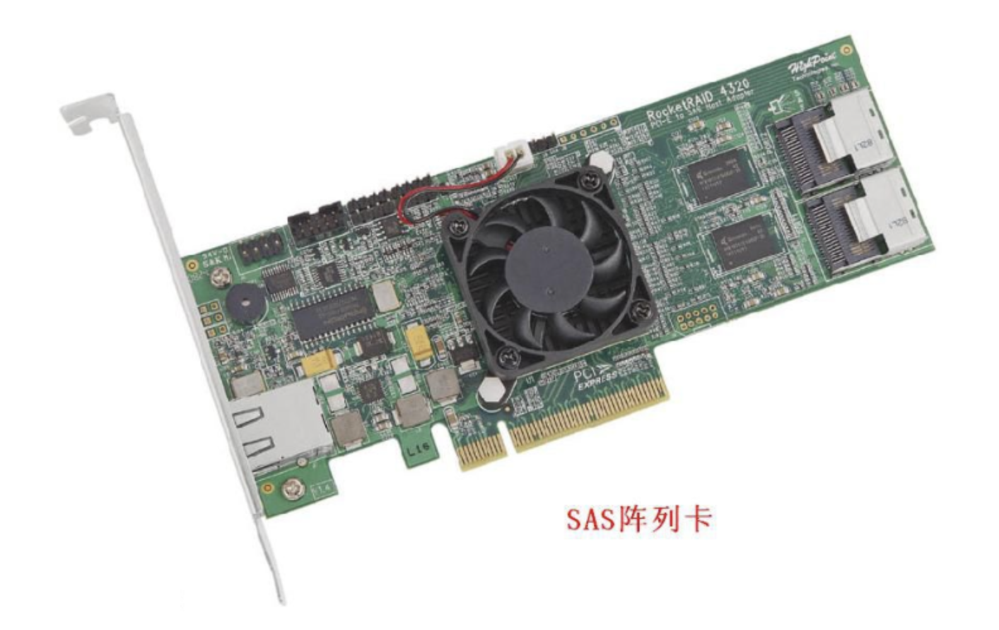
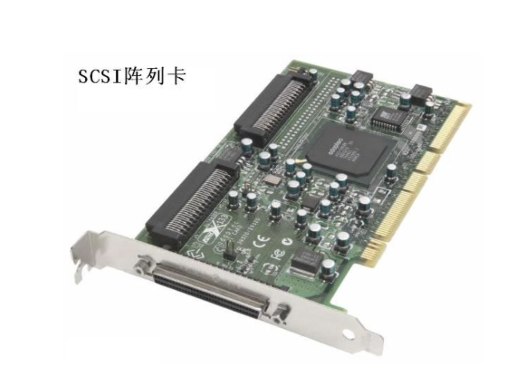
软Raid 10实战
添加4块硬盘，搭建raid 10磁盘冗余阵列。
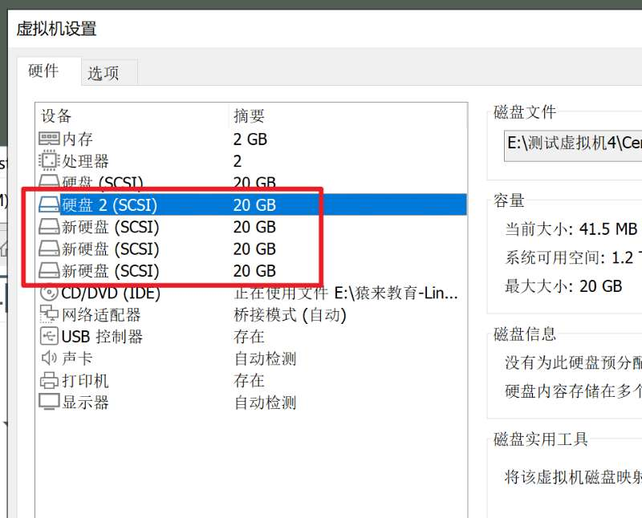
[root@lamp-241 ~]# ls -l /dev/sd*
brw-rw---- 1 root disk 8, 0 Mar 3 04:06 /dev/sda
brw-rw---- 1 root disk 8, 1 Mar 3 04:06 /dev/sda1
brw-rw---- 1 root disk 8, 2 Mar 3 04:06 /dev/sda2
brw-rw---- 1 root disk 8, 16 Mar 3 04:06 /dev/sdb
brw-rw---- 1 root disk 8, 32 Mar 3 04:06 /dev/sdc
brw-rw---- 1 root disk 8, 48 Mar 3 04:06 /dev/sdd
brw-rw---- 1 root disk 8, 64 Mar 3 04:06 /dev/sde
安装mdadm命令
mdadm 用于建设，管理和监控软件RAID阵列
可能需要单独安装
[root@lamp-241 ~]# yum install mdadm -y
参数
| 参数 | 解释 |
|---|---|
| -C | 用未使用的设备，创建raid |
| -a | yes or no，自动创建阵列设备 |
| -A | 激活磁盘阵列 |
| -n | 指定设备数量 |
| -l | 指定raid级别 |
| -v | 显示过程 |
| -S | 停止RAID阵列 |
| -D | 显示阵列详细信息 |
| -f | 移除设备 |
| -x | 指定阵列中备用盘的数量 |
| -s | 扫描配置文件或/proc/mdstat，得到阵列信息 |
创建raid 10命令
mdadm -Cv /dev/md0 -a yes -n 4 -l 10 /dev/sdb /dev/sdc /dev/sdd /dev/sde
-C 表示创建RAID阵列卡
-v 显示创建过程
/dev/md0 指定raid阵列的名字
-a yes 自动创建阵列设备文件
-n 4 参数表示用4块盘部署阵列
-l 10 代表指定创建raid 10级别
最后跟着四块磁盘设备名
执行命令
[root@lamp-241 ~]# mdadm -Cv /dev/md0 -a yes -n 4 -l 10 /dev/sdb /dev/sdc /dev/sdd /dev/sde
mdadm: layout defaults to n2mdadm: layout defaults to n2mdadm: chunk size defaults to 512Kmdadm: partition table exists on /dev/sdbmdadm: partition table exists on /dev/sdb but will be lost or
meaningless after creating array
mdadm: size set to 20954112K
检查raid 10 分区
[root@lamp-241 ~]# fdisk -l |grep /dev/md
Disk /dev/md0: 42.9 GB, 42914021376 bytes, 83816448 sectors
有了分区，下一步就是创建文件系统
[root@lamp-241 ~]# mkfs.xfs /dev/md0
meta-data=/dev/md0 isize=512 agcount=16, agsize=654720 blks
= sectsz=512 attr=2, projid32bit=1
= crc=1 finobt=0, sparse=0
data = bsize=4096 blocks=10475520, imaxpct=25
= sunit=128 swidth=256 blks
naming =version 2 bsize=4096 ascii-ci=0 ftype=1
log =internal log bsize=4096 blocks=5120, version=2
= sectsz=512 sunit=8 blks, lazy-count=1
realtime =none extsz=4096 blocks=0, rtextents=0
进行挂载分区
[root@lamp-241 ~]# mkdir /yuchao-linux
[root@lamp-241 ~]#
[root@lamp-241 ~]#
[root@lamp-241 ~]# mount /dev/md0 /yuchao-linux/
[root@lamp-241 ~]#
[root@lamp-241 ~]# mount -l|grep md0
/dev/md0 on /yuchao-linux type xfs (rw,relatime,attr2,inode64,sunit=1024,swidth=2048,noquota)
查看挂载后的磁盘使用情况
[root@lamp-241 ~]# df -hT /dev/md0
Filesystem Type Size Used Avail Use% Mounted on
/dev/md0 xfs 40G 33M 40G 1% /yuchao-linux
写入数据
[root@lamp-241 ~]# ls /yuchao-linux/
[root@lamp-241 ~]#
[root@lamp-241 ~]# touch /yuchao-linux/超哥带你学linux.txt
[root@lamp-241 ~]#
[root@lamp-241 ~]# ls /yuchao-linux/
超哥带你学linux.txt
查看raid 10信息
[root@lamp-241 ~]# mdadm -D /dev/md0
/dev/md0:
Version : 1.2
Creation Time : Thu Mar 3 04:20:20 2022
Raid Level : raid10
Array Size : 41908224 (39.97 GiB 42.91 GB)
Used Dev Size : 20954112 (19.98 GiB 21.46 GB)
Raid Devices : 4
Total Devices : 4
Persistence : Superblock is persistent
Update Time : Thu Mar 3 04:25:12 2022
State : clean
Active Devices : 4
Working Devices : 4
Failed Devices : 0
Spare Devices : 0
Layout : near=2
Chunk Size : 512K
Consistency Policy : resync
Name : lamp-241:0 (local to host lamp-241)
UUID : 8b05fda8:ea9f56df:d639157c:bf00d883
Events : 21
Number Major Minor RaidDevice State
0 8 16 0 active sync set-A /dev/sdb
1 8 32 1 active sync set-B /dev/sdc
2 8 48 2 active sync set-A /dev/sdd
3 8 64 3 active sync set-B /dev/sde
[root@lamp-241 ~]#
可以看到显示是4个激活的硬盘
加入开机自动挂载
[root@lamp-241 ~]# tail -1 /etc/fstab
/dev/md0 /yuchao-linux xfs defaults 0 0
遇见磁盘故障
[root@lamp-241 ~]# fdisk -l|grep sd
Disk /dev/sda: 21.5 GB, 21474836480 bytes, 41943040 sectors
/dev/sda1 * 2048 2099199 1048576 83 Linux
/dev/sda2 2099200 41943039 19921920 8e Linux LVM
Disk /dev/sdb: 21.5 GB, 21474836480 bytes, 41943040 sectors
Disk /dev/sdc: 21.5 GB, 21474836480 bytes, 41943040 sectors
Disk /dev/sdd: 21.5 GB, 21474836480 bytes, 41943040 sectors
Disk /dev/sde: 21.5 GB, 21474836480 bytes, 41943040 sectors
剔除一块硬盘
[root@lamp-241 ~]# mdadm /dev/md0 -f /dev/sdd
mdadm: set /dev/sdd faulty in /dev/md0
检查raid 10信息
[root@lamp-241 ~]# mdadm /dev/md0 -f /dev/sdd
mdadm: set /dev/sdd faulty in /dev/md0
[root@lamp-241 ~]# mdadm -D /dev/md0
/dev/md0:
Version : 1.2
Creation Time : Thu Mar 3 04:20:20 2022
Raid Level : raid10
Array Size : 41908224 (39.97 GiB 42.91 GB)
Used Dev Size : 20954112 (19.98 GiB 21.46 GB)
Raid Devices : 4
Total Devices : 4
Persistence : Superblock is persistent
Update Time : Thu Mar 3 04:28:33 2022
State : clean, degraded
Active Devices : 3
Working Devices : 3
Failed Devices : 1
Spare Devices : 0
Layout : near=2
Chunk Size : 512K
Consistency Policy : resync
Name : lamp-241:0 (local to host lamp-241)
UUID : 8b05fda8:ea9f56df:d639157c:bf00d883
Events : 23
可以看到/dev/sdd硬盘被移除了，faulty翻译是有故障的
Number Major Minor RaidDevice State
0 8 16 0 active sync set-A /dev/sdb
1 8 32 1 active sync set-B /dev/sdc
- 0 0 2 removed
3 8 64 3 active sync set-B /dev/sde
2 8 48 - faulty /dev/sdd
不影响raid 10的使用
[root@lamp-241 ~]# touch /yuchao-linux/天气确实不错.txt
[root@lamp-241 ~]#
[root@lamp-241 ~]# ls /yuchao-linux/
天气确实不错.txt 超哥带你学linux.txt
重新加入/dev/sdd硬盘
RAID10磁盘阵列，挂掉一块硬盘并不影响使用，只需要购买新的设备，替换损坏的磁盘即可
1.先取消RAID10阵列的挂载，注意必须没有人在使用挂载的设备
[root@lamp-241 ~]# umount /dev/md0
2.重启机器
reboot
3.重新添加新的磁盘加入raid 10
[root@lamp-241 ~]# mdadm /dev/md0 -a /dev/sdd
mdadm: added /dev/sdd
[root@lamp-241 ~]#
[root@lamp-241 ~]#
[root@lamp-241 ~]# mdadm -D /dev/md0
/dev/md0:
Version : 1.2
Creation Time : Thu Mar 3 04:20:20 2022
Raid Level : raid10
Array Size : 41908224 (39.97 GiB 42.91 GB)
Used Dev Size : 20954112 (19.98 GiB 21.46 GB)
Raid Devices : 4
Total Devices : 4
Persistence : Superblock is persistent
Update Time : Thu Mar 3 04:47:07 2022
State : clean, degraded, recovering
Active Devices : 3
Working Devices : 4
Failed Devices : 0
Spare Devices : 1
Layout : near=2
Chunk Size : 512K
Consistency Policy : resync
Rebuild Status : 6% complete # 默认会有一个修复的过程，这里是进度条
Name : lamp-241:0 (local to host lamp-241)
UUID : 8b05fda8:ea9f56df:d639157c:bf00d883
Events : 38
Number Major Minor RaidDevice State
0 8 16 0 active sync set-A /dev/sdb
1 8 32 1 active sync set-B /dev/sdc
4 8 48 2 spare rebuilding /dev/sdd
3 8 64 3 active sync set-B /dev/sde
[root@lamp-241 ~]#
最终修复完毕
[root@lamp-241 ~]# mdadm -D /dev/md0
/dev/md0:
Version : 1.2
Creation Time : Thu Mar 3 04:20:20 2022
Raid Level : raid10
Array Size : 41908224 (39.97 GiB 42.91 GB)
Used Dev Size : 20954112 (19.98 GiB 21.46 GB)
Raid Devices : 4
Total Devices : 4
Persistence : Superblock is persistent
Update Time : Thu Mar 3 04:48:45 2022
State : clean
Active Devices : 4
Working Devices : 4
Failed Devices : 0
Spare Devices : 0
Layout : near=2
Chunk Size : 512K
Consistency Policy : resync
Name : lamp-241:0 (local to host lamp-241)
UUID : 8b05fda8:ea9f56df:d639157c:bf00d883
Events : 54
Number Major Minor RaidDevice State
0 8 16 0 active sync set-A /dev/sdb
1 8 32 1 active sync set-B /dev/sdc
4 8 48 2 active sync set-A /dev/sdd
3 8 64 3 active sync set-B /dev/sde
[root@lamp-241 ~]#
删除软件raid
1.卸载磁盘
[root@lamp-241 ~]# umount /dev/md0
2.停止raid服务
[root@lamp-241 ~]# mdadm -S /dev/md0
mdadm: stopped /dev/md0
3.卸载raid中所有硬盘
[root@lamp-241 ~]#
[root@lamp-241 ~]# mdadm --misc --zero-superblock /dev/sdb
[root@lamp-241 ~]# mdadm --misc --zero-superblock /dev/sdc
[root@lamp-241 ~]# mdadm --misc --zero-superblock /dev/sdd
[root@lamp-241 ~]# mdadm --misc --zero-superblock /dev/sde
4.删除raid配置文件
rm -f /etc/mdadm.conf
5.删除开机自动挂载配置
修改/etc/fstab
/dev/md0 /yuchao-linux xfs defaults 0 0 #删除
至此，就体验了一下raid 10 的创建、挂载读写、删除。